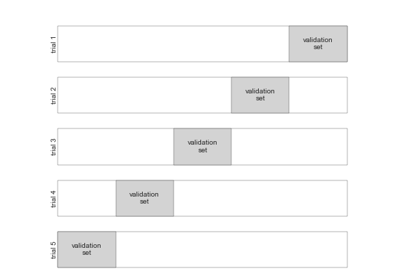

Scikit Learn¶
Overview¶
There are several Python libraries which provide implementations of a range of machine learning algorithms. One of the best known is Scikit-Learn, a package that provides efficient versions of a large number of common algorithms. Scikit-Learn is characterized by a clean, uniform, and streamlined API, as well as by very useful and complete online documentation. A benefit of this uniformity is that once you understand the basic use and syntax of Scikit-Learn for one type of model, switching to a new model or algorithm is very straightforward.
Scikit learn is built on top of NumPy, SciPy, and matplotlib. It contains a tools for classical machine learning and statistical modeling, including classification, regression, clustering and dimensionality reduction. It is designed to interoperate with the Python numerical and scientific libraries NumPy and SciPy (but not Pandas by default). In addition, it also provides a selection of sample datasets, most of which are fairly small and well-known.
Note
Scikit Learn is not designed to create neural networks / work with deep learning. For this the most popular libraries are PyTorch and TensorFlow + Keras.
Note
Scikit Learn is a very large library, so we will only cover the basics here. For more information, check the official documentation.
Installation¶
To install Scikit Learn, we can use pip:
or, alternatively, poetry:
Introduction¶
Machine learning is about creating models from data: for that reason, we'll start by discussing how data can be represented in order to be understood by the computer. The best way to think about data within Scikit-Learn is in terms of tables of data.
Datasets¶
A basic table is a two-dimensional grid of data, in which the rows represent individual elements of the dataset, and the columns represent quantities related to each of these elements.
Note
Scikit Learn contains several datasets that can be used to test machine learning algorithms.
To load a dataset, we can use the load_* functions, where * is the name of the dataset (e.g. load_iris).
For example, consider the Iris dataset, famously analyzed by Ronald Fisher in 1936:
from sklearn import datasets
iris = datasets.load_iris(as_frame=True)
iris_df = iris.frame
print(iris_df.head())
# Output:
sepal length (cm) sepal width (cm) petal length (cm) petal width (cm) target target_names
0 5.1 3.5 1.4 0.2 0 setosa
1 4.9 3.0 1.4 0.2 0 setosa
2 4.7 3.2 1.3 0.2 0 setosa
3 4.6 3.1 1.5 0.2 0 setosa
4 5.0 3.6 1.4 0.2 0 setosa
Note
The as_frame=True argument tells Scikit Learn to return a Pandas DataFrame instead of a NumPy array.
This is useful because we can use the column names to refer to the columns, instead of using the column indices.
After calling the load_iris() function, we get the data from the Iris dataset. There are typically two
ways to return the data:
-
As
X,yarrays. HereXis the data (independent variables) andyis the target (dependent variables). This option can be chosen by settingreturn_X_y=Truewhen calling the load method.Note
The
Xandynames are very general and, in the context of machine learning, almost always refer to the data and target variables, respectively (not only in Scikit Learn, but in other libraries as well). -
The other option is a
Bunchobject, which is similar to a dictionary (which is what we used in the previous example). It contains the data, the target, and other information about the dataset:print(iris.keys()) # Output: dict_keys(['data', 'target', 'frame', 'target_names', 'DESCR', 'feature_names', 'filename'])The values of this dictionary are, by default, NumPy arrays, except if we used
as_frame=Truewhen calling the load method, in which case they are Pandas DataFrames:data: the data, which is a NumPy array or a Pandas DataFrame. It contains the features of the dataset (i.e, the independent variables). In this table, each column is a feature, and each row is an observation.target: the target, which is a NumPy array or a Pandas DataFrame. It contains the labels of the dataset (i.e, the dependent variable).frame: the data and target combined into a single DataFrame.target_names: the names of the labels (in this case, the names of the flower species).DESCR: the description of the dataset.feature_names: the names of the features (in this case, the names of the flower measurements).filename: the path to the file containing the dataset.
Supervised vs Unsupervised problems¶
When using scikit-learn, we will typically work with tables following this data and target keys convention.
This is always the case when we are working with supervised learning machine learning problems, where we have a
target variable that we want to predict.
Note
Supervised problems are, at a very high level, interpolation problems. We have a set of points, and we want to find a function \(f(X)\) that passes through all of them, so that \(f(X) \sim y\).
More formally, we want to minimize the error (known as the loss or cost function),
By doing this, we hope that if we use the function in a new point \(X'\), we will get a value \(f(X')\) that is close to the true value of its associated \(y'\).
In the Iris dataset, the target variable is the flower species, and the features are the flower measurements, so if were to use this dataset for a machine learning problem, we would try to construct a model that predicts the flower species (dependent variable) from the flower measurements (independent variables).
When we are working with unsupervised learning machine learning problems we don't have a target variable
that we want to predict. In such cases, we will usually work with tables following the data only key convention,
since we don't have a target variable.
Scikit-Learn's API¶
Scikit-Learn's API is designed around the following principles:
- Consistency: All objects share a common interface drawn from a limited set of methods, with consistent documentation. This means that we can learn one estimator API (i.e., methods) and other estimators will work the same way.
- Inspection: All parameter values are exposed as public attributes. This means that we can inspect the parameters of an estimator by looking at its attributes.
- Limited object hierarchy: Only algorithms are represented by Python classes; datasets are represented in standard formats (NumPy arrays, Pandas DataFrames, SciPy sparse matrices) and parameter names use standard Python strings.
- Composition: Many machine learning tasks can be expressed as sequences of more fundamental algorithms, and Scikit-Learn makes use of this wherever possible.
- Sensible defaults: When models require user-specified parameters, the library defines an appropriate default value.
In practice, these principles make Scikit-Learn very easy to use, once the basic principles are understood.
Estimators' API¶
Estimator are classes from the library that implement machine learning algorithms (i.e., objects that "learn" from data). In the context of Supervised Learning, an estimator is a Python object that implements (at least) the following methods:
fit(X, y): fit the model usingXas training data andyas target values.predict(X): predict the target values ofXusing the trained model.
If the prediction task is to classify the observations in a set of finite labels, in other words to name the objects observed, the task is said to be a classification task. In this case, the target variable is said to be a categorical variable (i.e., a variable that can take on one of a limited, and usually fixed, number of possible values). If, on the other hand, the target variable is a continuous target variable, it is said to be a regression task.
The fit method¶
The fit method is used to train the model, and is the first method that we should call when using an estimator (after
our data is ready, of course). It takes as input the training data and the training labels, and
trains the model. For example, to train a KNN classifier, we can do the following:
from sklearn.neighbors import KNeighborsClassifier
X_train = ...
y_train = ...
knn = KNeighborsClassifier(n_neighbors=3)
knn.fit(X_train, y_train)
Note
A K-Nearest Neightbors is an algorithm that does not fit a model to the data. Instead, it memorizes the training data in an internal data structure that is efficient to query. However, the example serves as an illustration that in Scikit Learn, the order is always the same: first we create the estimator, then we fit it to the data, then we use it to make predictions.
The predict method¶
The predict method is used to make predictions. It takes as input the data to predict, and returns the predictions.
For example, to predict the labels of a test set, we can do the following:
Transformers¶
SciKit learn also provides classes known as transformers, which are estimators (i.e., they inherit from a
base class called BaseEstimator) that can transform data.
Note
These transformers have nothing to do with the transformers in deep learning.
Transformers are typically used to preprocess the data before training the model. We'll discuss some examples in the following sections, but bear in mind that many of these transformations can be done by hand, for example in Pandas, before going into Scikit Learn.
Note
Transformers are estimators, so they also have fit and predict methods. However, the fit method is used to
learn the parameters of the transformer, and the predict method is used to transform the data. Hence, these
methods are not used in the same way as in estimators, which represent machine learning algorithms.
Standard scaler¶
The StandardScaler is a transformer used to standardize the data before training a model.
It removes the mean of the data and scales it unit variance, calculating the z-score of each sample in the dataset:
$$
z = \frac{x - u}{s}
$$
where u is the mean of the training samples or zero if with_mean=False, and s is the standard deviation of
the training samples or one if with_std=False:
from sklearn.preprocessing import StandardScaler
scaler = StandardScaler()
X_train_scaled = scaler.fit_transform(X_train)
Note
The fit_transform method is a combination of the fit and transform methods. It first fits the transformer
to the data (which in this case, although confusing, means computing the mean and std), and then transforms the
data. This is equivalent to calling fit and then transform separately.
One-hot encoder¶
The OneHotEncoder is a transformer used to encode categorical features that do not have a natural ordering
as a one-hot numeric array (i.e., a binary array with a single 1 and many 0s).
For example, if we have a categorical feature with three possible values, a, b, and c, the one-hot encoding
would be:
| a | b | c |
|---|---|---|
| 1 | 0 | 0 |
| 0 | 1 | 0 |
| 0 | 0 | 1 |
import pandas as pd
from sklearn.preprocessing import OneHotEncoder
X_train = pd.DataFrame({'feature': ['a', 'b', 'c']})
encoder = OneHotEncoder()
X_train_encoded = encoder.fit_transform(X_train)
print(X_train_encoded.toarray())
# Output:
[[1. 0. 0.]
[0. 1. 0.]
[0. 0. 1.]
Ordinal encoder¶
The OrdinalEncoder is a transformer used to encode categorical features that have a natural ordering as a numeric
array. For example, if we have a categorical feature with three possible values that have a meaningful order,
e.g. low, medium, and high, the ordinal encoding would be:
| low | medium | high |
|---|---|---|
| 0 | 1 | 2 |
from sklearn.preprocessing import OrdinalEncoder
X_train = pd.DataFrame({'feature': ['low', 'medium', 'high']})
encoder = OrdinalEncoder()
X_train_encoded = encoder.fit_transform(X_train)
print(X_train_encoded)
# Output:
[[0.]
[1.]
[2.]]
Metrics¶
A metric is a function that measures the performance of a model. For example, the accuracy is a metric that measures the proportion of correct predictions made by a classifier, and the mean squared error is a metric that measures the average squared difference between the predicted values and the true values of a regression model.
Scikit Learn provides a number of metrics that can be used to evaluate the performance of a model. These metrics,
or modified versions of it, are used as the loss function in the optimization problems that the models are trying
to solve during training (i.e., when you call the fit method).
The Scikit learn API provides two ways to use metrics:
- The
scoremethod: Thescoremethod is a method that is implemented by all estimators. It takes as input the data and the target, and returns a score that measures the performance of the model. The score is usually a number between 0 and 1, where 1 means that the model is perfect and 0 means that the model is useless. Check the documentation of the estimator to see what score it returns. - The
metricsmodule: Themetricsmodule contains a number of functions that can be used to evaluate the performance of a model. These functions take as input the true values and the predicted values, and return a score that measures the performance of the model. The score is usually a number between 0 and 1, where 1 means that the model is perfect and 0 means that the model is useless.
Note
In general, it is not possible to use a custom loss function in Scikit Learn. For example, if you want to use a different metric than vanilla mean squared error in a regression problem, you should take a look at other estimators that implement other loss functions. Take a look here.
Classification metrics¶
Some of the most common classification metrics are:
-
Accuracy: The accuracy is the proportion of correct predictions made by a classifier. It is defined as: $$ \text{accuracy} = \frac{\text{number of correct predictions}}{\text{total number of predictions}} $$ The accuracy is a number between 0 and 1, where 1 means that the model is perfect and 0 means that the model is useless. The accuracy is implemented by all classifiers in Scikit Learn, and can be often computed using the
scoremethod.Note
The accuracy is a very common metric, but it is not always the best metric to use. For example, if we have a dataset with 99% of the observations belonging to class A and 1% belonging to class B, a classifier that always predicts class A will have an accuracy of 99%, even though it is a useless classifier. In this case, a better metric would be the precision or the recall.
-
Confusion matrix: The confusion matrix is a table that shows the number of correct and incorrect predictions made by a classifier. It is defined as:
Predicted: 0 Predicted: 1 Actual: 0 True negatives False positives Actual: 1 False negatives True positives The confusion matrix is implemented by all classifiers in Scikit Learn, and can be computed using the
confusion_matrixfunction in themetricsmodule.from sklearn.metrics import confusion_matrix y_true = [0, 1, 0, 1] y_pred = [1, 1, 0, 0] print(confusion_matrix(y_true, y_pred)) # Output: [[1 1] [1 1]]Note
The accuracy, precision, recall, etc. can all be computed from the confusion matrix.
-
AUROC: The AUROC (Area Under the Receiver Operating Characteristic) is a metric that measures the performance of a classifier. It is defined as the area under the ROC curve, which is a curve that plots the true positive rate (TPR) against the false positive rate (FPR) at various threshold settings. The AUROC is a number between 0 and 1, where 1 means that the model is perfect and 0 means that the model is useless. The AUROC is implemented by all classifiers in Scikit Learn, and can be computed using the
roc_auc_scorefunction in themetricsmodule.from sklearn.metrics import roc_auc_score y_true = [0, 1, 0, 1] y_pred = [1, 1, 0, 0] print(roc_auc_score(y_true, y_pred)) # Output: 0.5Note
The AUROC is a more robust metric than the accuracy, since it is not affected by the class imbalance problem described above.
Regression metrics¶
Some of the most common regression metrics are:
-
Mean squared error: The mean squared error is the average squared difference between the predicted values and the true values of a regression model. It is defined as:
\[ \text{MSE} = \frac{1}{n} \sum_{i=1}^{n} (y_i - \hat{y}_i)^2 \]where \(y_i\) is the true value of the \(i\)-th observation, \(\hat{y}_i\) is the predicted value of the \(i\)-th observation, and \(n\) is the number of observations. The MSE is implemented by all regressors in Scikit Learn, and can be often computed using the
scoremethod. -
Mean absolute error: The mean absolute error is the average absolute difference between the predicted values and the true values of a regression model. It is defined as: $$ \text{MAE} = \frac{1}{n} \sum_{i=1}^{n} |y_i - \hat{y}_i| $$ where \(y_i\) is the true value of the \(i\)-th observation, \(\hat{y}_i\) is the predicted value of the \(i\)-th observation, and \(n\) is the number of observations. The MAE is implemented by all regressors in Scikit Learn, and can be often computed using the
scoremethod. -
\(R^2\) score: The \(R^2\) score is a metric that measures the proportion of variance in the dependent variable that is predictable from the independent variables. It is defined as:
$$ R^2 = 1 - \frac{\sum_{i=1}^{n} (y_i - \hat{y} _i)^2} {\sum_{i=1}^{n} (y_i - \bar{y})^2} $$ where \(y_i\) is the true value of the \(i\)-th observation, \(\hat{y}_i\) is the predicted value of the \(i\)-th observation, \(\bar{y}\) is the mean of the true values, and \(n\) is the number of observations. The \(R^2\) score is a number between 0 and 1, where 1 means that the model is perfect and 0 means that the model is useless. The \(R^2\) score is implemented by all regressors in Scikit Learn, and can be often computed using the
scoremethod.
Model validation¶
Learning the parameters of a prediction function and testing it on the same data is a methodological mistake: a model that would just repeat the labels of the samples that it has just seen would have a perfect (or almost perfect) score but would fail to predict anything useful on yet-unseen data.
Note
This situation is called overfitting. This happens when the model learns the training data "too well". Since all datasets contain some noise, eventually the model will fit to the noise as well, which will cause it to perform worse on new data.
Holdout sets with train_test_split¶
To avoid this situation, it is common practice when performing a (supervised) machine learning experiment to hold out part of the available data.
In scikit-learn a random split into training and test sets can be quickly computed with the train_test_split
helper function. Let's use it to hold out 25% of the data for testing, in the following example:
from sklearn.model_selection import train_test_split
from sklearn.metrics import accuracy_score
from sklearn.neighbors import KNeighborsClassifier
model = KNeighborsClassifier(n_neighbors=1)
X_train, X_test, y_train, y_test = train_test_split(X, y, test_size=0.25)
# fit the model on one set of data
model.fit(X_train, y_train)
# evaluate the model on the second set of data
y2_model = model.predict(X_test)
accuracy_score(y_test, y2_model)
Cross-validation¶
One disadvantage of using a holdout set for model validation is that we have lost a portion of our data to the model training. In the above case, half the dataset does not contribute to the training of the model! This is not optimal, and can cause problems especially if the initial set of training data is small.
One way to address this is to use cross-validation; that is, to do a sequence of fits where each subset of the data is used both as a training set and as a validation set. Visually, it might look something like this:

Here we split the data into five groups, and use each of them in turn to evaluate the model fit on the other
4/5 of the data. This would be rather tedious to do by hand, and so we can use Scikit-Learn's cross_val_score
convenience routine to do it succinctly:
from sklearn.model_selection import cross_val_score
cross_val_score(model, X, y, cv=5)
# Output:
array([0.96666667, 0.96666667, 0.93333333, 0.96666667, 1.])
Repeating the validation across different subsets of the data gives us a better idea of the performance of the algorithm. What comes out are \(n\) accuracy scores, which we could combine (for example, by taking the median or the mean).
Note
When working with time series data, it is important to use cross-validation in a way that respects the time
dependence between observations. In this case, we can use the TimeSeriesSplit class instead to
perform cross-validation.
Model hyperparameters¶
A model hyperparameter is a configuration that is external to the model and whose value cannot be estimated from data. They represent the "knobs" of a model: the type of function used to fit the model, the number of parameters, the regularization parameter, the network architecture (in the case of neural networks), etc.
Note
Hyperparameters are different from parameters. Parameters are values that are estimated from data, such as the coefficients of a linear regression model, or the weights of a neural network. Hyperparameters are everything else.
Of core importance is the following question: if our estimator is underperforming, how should we move forward? There are several possible answers:
- Use a more complicated/more flexible model
- Use a less complicated/less flexible model
- Gather more training samples
- Gather more data to add features to each sample
The answer to this question is often counter-intuitive. Sometimes using a more complicated model will give worse results, and adding more training samples may not improve your results!
Bias-variance trade-off¶
Fundamentally, the question of "the best model" is about finding a sweet spot in the tradeoff between bias and variance. Consider the following figure, which presents two regression fits to the same dataset:
In general, as we increase the number of tunable parameters in a model, it becomes more flexible, and can better fit a training data set. It is said to have lower error, or bias. However, for more flexible models, there will tend to be greater variance to the model fit each time we take a set of samples to create a new training data set.
Note
The biasvariance trade-off is the conflict in trying to simultaneously minimize these two sources of error.
From the previous figure, we see that (and the observation generally holds):
- For high-bias models, the performance of the model on the validation set is similar to the performance on the training set.
- For high-variance models, the performance of the model on the validation set is far worse than the performance on the training set.
Validation curves¶
If we imagine that we have some ability to tune the model complexity, we would expect the training score and validation score to behave as illustrated in the following figure:

The diagram above is a validation curve, and we see the following essential features:
- The training score is (almost) always better than the validation score. This is generally the case: the model will be a better fit to data it has seen than to data it has not seen.
- For very low model complexity (a high-bias model), the training data is under-fit, which means that the model is a poor predictor both for the training data and for any previously unseen data.
- For very high model complexity (a high-variance model), the training data is over-fit, which means that the model predicts the training data very well, but fails for any previously unseen data.
- For some intermediate value, the validation curve has a maximum. This is the optimal scenario, and the parameter value set at the maximum is the best model.
Learning curves¶
One important aspect of model complexity is that the optimal model will generally depend on the size of your training data. A learning Curve is a plot of the training and cross-validation error as a function of the number of training samples. The general behavior we would expect from a learning curve is this:
- A model of a given complexity will overfit a small dataset: this means the training score will be relatively high, while the validation score will be relatively low.
- A model of a given complexity will underfit a large dataset: this means that the training score will decrease, but the validation score will increase.
- A model will never, except by chance, give a better score to the validation set than the training set: this means the curves should keep getting closer together but never cross.
The following figure shows a typical learning curve for a supervised learning problem:
Note
Another common type of curve are Loss vs. epoch graphs, where in the Y axis we have a loss function to minimize (an "error") and on the X axis we have the number of epochs (iterations) of the training algorithm (sort of like the time axis). These curves are used to monitor the training process of a model over time, and to determine when to stop training. The following figure shows a loss vs. epoch graph for a neural network:

Cross-validation including hyperparameter tuning¶
The preceding discussion of the validation and learning curves is meant to give you some intuition into the trade-off between bias and variance, and its dependence on model complexity and training set size. In practice, models generally have more than one knob to turn, and thus plots of validation and learning curves change from lines to multi-dimensional surfaces. In these cases, such visualizations are difficult and we would rather simply find the particular model that maximizes the validation score.
Scikit Learn provides a number of tools to perform model selection, including cross-validation and grid search
on hyperparameters. A common way to do this is to use the GridSearchCV class, which implements a grid search
with cross-validation.
This class takes as input an estimator, a dictionary of hyperparameters, and a cross-validation strategy, and returns the best hyperparameters for the estimator. For example, to find the best number of neighbors for a KNN classifier, we can do the following:
from sklearn.model_selection import GridSearchCV
from sklearn.neighbors import KNeighborsClassifier
X_train = ...
y_train = ...
model = KNeighborsClassifier()
param_grid = {'n_neighbors': [1, 3, 5, 7, 9]}
grid = GridSearchCV(model, param_grid, cv=5)
grid.fit(X_train, y_train)
print(grid.best_params_)
print(grid.best_score_)
Note
The cv argument is the number of folds in the cross-validation. The default value is 5, but it can be changed
to any integer.
Now that this is fit, we can ask for the best parameters as follows:
The grid search provides other options, including the ability to specify a custom scoring function, to parallelize the computations, to do randomized searches, and more.
Feature Engineering¶
All of the examples so far assume that you have numerical data in a tidy, [n_samples, n_features] format.
In the real world, data rarely comes in such a form. Hence, one of the more important steps in using machine
learning in practice is feature engineering: that is, taking whatever information you have about your
problem and turning it into numbers that you can use to build your feature matrix.
Note
Feature engineering is a fancy term for "creating new variables from existing variables". For example, if we have a dataset with a column containing the date of birth of a person, we can create a new column containing the age of the person by subtracting the date of birth from the current date.
Note
Proper data cleaning is also an important part of feature engineering. Some common data cleaning tasks include:
- Missing values: Most machine learning algorithms cannot handle missing values. There are several ways to deal with missing values, including removing the observations with missing values, imputing the missing values with the mean or median, or using a machine learning algorithm that can handle missing values.
- Outliers: Outliers are observations that are far away from the rest of the observations. Outliers can have a significant effect on the model, so it is important to detect and (if it is justified to do so) remove them.
Types of features¶
The following sections describe a few general tricks of feature engineering.
Categorical features¶
One common type of non-numerical data is categorical data. To use this data in a machine learning model, we need to convert this categorical feature to a numerical feature.
If the categorical feature has no natural ordering, we can use one-hot encoding to convert it to a numerical feature. If the categorical feature has a natural ordering, we can use ordinal encoding to convert it to a regular number.
Text features¶
Another common type of non-numerical data is text data. To use this data in a machine learning model, we need to convert this text feature to a numerical feature. This can be done using several NLP techniques. Check bag-of-words, TF-IDF, and word embeddings for more information.
Date features¶
Another common type of non-numerical data is date data. To use this data in a machine learning model, we need to convert this date feature to a numerical feature. This can be done by extracting the year, month, day, etc. from the date and using them as numerical features.
Date features are very important in time series, which naturally has seasonality and trends. For this, sometimes it is a good idea to use extra dummy variables to be able to express all dates that are close to each other (e.g., the day of the week, the number of the week, etc.). These extra variables should be the same as the regular ones, but with a different origin.
For example, if we only have the week number as a feature, we might not be able to express that week 52 and week 1 are close to each other. However, if we also add a new feature that is the week number plus 26, the model might be able to understand that weeks "live" in a circle instead of a line.
Image features¶
Another common type of data are images. Although they might look like non-numerical data, images are actually matrices of numbers. To use this data in a machine learning, the easiest way is to flatten the image and use the pixels as numerical features (often even deleting the color channels).
Derived features¶
Sometimes, we can create new features from existing features. For example, if we have a dataset with a column containing the date of birth of a person, we can create a new column containing the age of the person by subtracting the date of birth from the current date.
For numerical data, we can often apply mathematical transformations to create new features that have a better behavior for the model, or that change the data distribution to one that is more suitable. This needs to be done on a case-by-case basis, and requires some domain knowledge.
Feature selection¶
In some cases, we might have too many features, which makes the model too complex and costly to maintain. In such cases we might want to select only the most important ones. This can be achieved in several ways:
- With dimensionality reduction techniques, such as PCA.
- With feature importance techniques, such as the SHAP values (and simpler alternatives). A good rule of thumb to know if a feature is important is to add noise to it and see if the model performance decreases. If it does, the feature is probably important. Another, similar, option is to add random noise features and scrap all features that perform worse than the random noise features.
Machine learning algorithms in SKLearn¶
Scikit Learn provides implementations of a large number of machine learning algorithms. These algorithms are implemented as the already discussed estimator objects, and can be used to solve a wide range of machine learning problems.
Regression models¶
Regression is the task of predicting a continuous value. For example, predicting the price of a house is a regression task, or predicting the height of a person. Scikit Learn provides a number of regression models that can be used to solve regression problems.
Common regression models¶
-
Linear regression: Linear regression is a linear model that assumes a linear relationship between the dependent variable and the independent variables. It is implemented by the
LinearRegressionclass in thelinear_modelmodule. -
Random forest regression: Random forest regression is an ensemble model that fits a number of decision tree classifiers on various sub-samples of the dataset and uses averaging to improve the predictive accuracy and control over-fitting. It is implemented by the
RandomForestRegressorclass in theensemblemodule.
Regression examples¶
https://jakevdp.github.io/PythonDataScienceHandbook/05.02-introducing-scikit-learn.html#Supervised-learning-example:-Simple-linear-regression
Classification¶
Classification is the task of predicting a class from a set of classes. For example, predicting whether an email is spam or not is a classification task, or predicting whether a person has a disease or not. Scikit Learn provides a number of classification models that can be used to solve classification problems.
Common classification models¶
-
Logistic regression: Logistic regression is a linear model that assumes a linear relationship between the log-odds of the dependent variable and the independent variables. It is implemented by the
LogisticRegressionclass in thelinear_modelmodule.from sklearn.linear_model import LogisticRegression X_train = ... y_train = ... model = LogisticRegression() model.fit(X_train, y_train)Note
Despite its name, logistic regression is a classification algorithm, not a regression algorithm. The name comes from the fact that it is a regression algorithm that uses logistic functions to model the relationship between the dependent and independent variables. It can be used for binary classification problems or multi-class classification problems (i.e., problems with more than two classes).
-
K-Nearest Neighbors: K-Nearest Neighbors is a non-parametric method used for classification and regression. It is a lazy learning algorithm that does not fit a model to the data. It is implemented by the
KNeighborsClassifierclass in theneighborsmodule. -
Random forest classification: Random forest classification is an ensemble model that fits a number of decision tree classifiers on various sub-samples of the dataset and uses averaging to improve the predictive accuracy and control over-fitting. It is implemented by the
RandomForestClassifierclass in theensemblemodule.```python from sklearn.ensemble import RandomForestClassifier X_train = ... y_train = ... model = RandomForestClassifier() model.fit(X_train, y_train) ```
Examples¶
https://jakevdp.github.io/PythonDataScienceHandbook/05.02-introducing-scikit-learn.html#Supervised-learning-example:-Iris-classification
Clustering¶
Clustering is the task of grouping data points into clusters. For example, grouping customers into clusters based on their purchase history is a clustering task. Scikit Learn provides a number of clustering algorithms that can be used to solve clustering problems.
Common clustering models¶
-
K-Means: K-Means is a clustering algorithm that partitions the data into K clusters. It is implemented by the
KMeansclass in theclustermodule. -
HD-BSCAN: HD-BSCAN is a clustering algorithm that partitions the data into clusters. It is implemented by the
HDBSCANclass in theclustermodule.
Examples¶
https://jakevdp.github.io/PythonDataScienceHandbook/05.02-introducing-scikit-learn.html#Unsupervised-learning:-Iris-clustering
Dimensionality reduction¶
Dimensionality reduction is the task of reducing the number of features in a dataset. For example, reducing the number of features in an image to the most important ones is a dimensionality reduction task. Scikit Learn provides a number of dimensionality reduction algorithms that can be used to solve dimensionality reduction problems.
Common dimensionality reduction models¶
-
Principal Component Analysis: Principal Component Analysis (PCA) is a dimensionality reduction algorithm that transforms the data into a lower-dimensional space. It is implemented by the
PCAclass in thedecompositionmodule.
Note
Not all dimensionality reduction algorithms can be found in SKLearn. UMAP, for example, is a very popular dimensionality reduction algorithm that is not implemented.
Examples¶
https://jakevdp.github.io/PythonDataScienceHandbook/05.02-introducing-scikit-learn.html#Unsupervised-learning-example:-Iris-dimensionality
Annex: common pitfalls in ML¶
Curse of dimensionality¶
The curse of dimensionality refers to various phenomena that arise when analyzing and organizing data in high-dimensional spaces that do not occur in low-dimensional settings such as the three-dimensional physical space of everyday experience.
In machine learning, the curse of dimensionality is often used to refer to the fact that the performance of many machine learning algorithms degrades as the number of features increases. This is because, as the number of features increases, the number of observations required to obtain a good model increases exponentially with the number of features.
Overfitting¶
Overfitting is a modeling error that occurs when a function is too closely fit to a limited set of data points. Overfitting the model generally takes the form of making an overly complex model to explain idiosyncrasies in the data under study. In reality, the data being studied often has some degree of error or random noise within it. Thus, attempting to make the model conform too closely to slightly inaccurate data can infect the model with substantial errors and reduce its predictive power.
Underfitting¶
Underfitting occurs when a statistical model or machine learning algorithm cannot capture the underlying trend of the data. Intuitively, underfitting occurs when the model or the algorithm does not fit the data well enough. More specifically, underfitting occurs if the model or algorithm shows low variance but high bias. Underfitting is often a result of an excessively simple model.
Data leakage¶
Data leakage is a problem that occurs when information about the target variable is inadvertently introduced into the training data. This can cause the model to perform unrealistically well during training, but perform poorly during testing.
Note
If we are not careful with time series data when splitting the data into training and test sets, we can introduce data leakage by using information from the future to predict the past!
Class imbalance¶
Class imbalance is a problem that occurs when the number of observations in each class is not equal. This can cause problems when training a model, since the model will tend to predict the most common class. For example, if we have a dataset with 99% of the observations belonging to class A and 1% belonging to class B, a classifier that always predicts class A will have an accuracy of 99%, even though it is a useless classifier. In this case, a better metric would be the AUROC.
Other¶
- Clustering: Clustering is the task of grouping data points into clusters. For example, grouping customers into clusters based on their purchase history is a clustering task.
- Dimensionality reduction: Dimensionality reduction is the task of reducing the number of features in a dataset. For example, reducing the number of features in an image to the most important ones is a dimensionality reduction task.